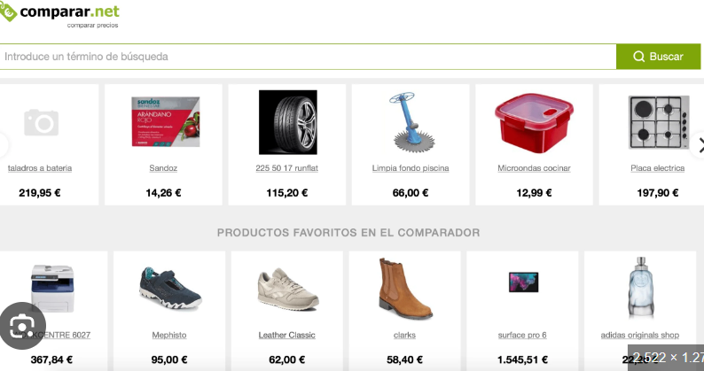

Hola 👋
¡Hola! Soy ingeniero informático y administrador de sistemas. Me gusta trabajar con Java, Spring Boot, Python, C y C++, automatizar procesos con scripting y sacar el máximo partido a entornos Linux. Me motiva construir software robusto y mantener sistemas seguros y eficientes. Échale un vistazo a mis proyectos 👇
Proyectos Destacados
ConsultasApp
App de gestión de citas médicas para clínicas. Backend REST con validación concurrente.
🧩 ☕ 🐘 🎨
Ver en GitHub
DogHealth
Control y seguimiento de salud animal con backend en Java y frontend interactivo.
⚙️ ⚛️ ☕ 🧑💻 🎨
Ver en GitHubTopRankers
Ranking y métricas de campañas de mailing con visualizaciones interactivas.
📊 🐍 📬 💻 🖥️
Ver en GitHub

Comparador de precios
App qeu se encarga de scrapear la web buscando los mejores precios.
🌿 🐍 📡 ⚛️ ☁️
Ver en GitHubContacto
¿Quieres hablar sobre proyectos, colaboración o una oportunidad profesional? 📬
- Email: josemigueldevsof@gmail.com
- GitHub: @JoseMiguelHYB
- LinkedIn: josemiguelcastro